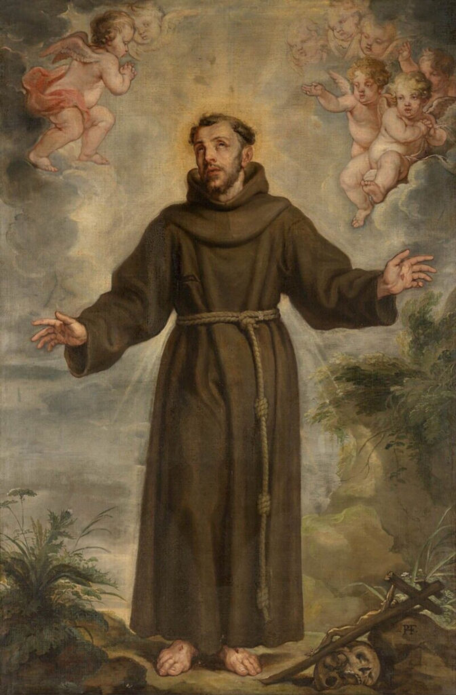

„Hoće li tko za mnom, neka se odreče samoga sebe, neka uzme svoj križ i neka ide za mnom.” (Mt 16,24)

Franjo Asiški, rođen 1182. godine kao sin imućnog trgovca, u mladosti je bio poznat kao "kralj zabava" i ljubitelj raskoši. Iako je bio lakomislen i željan slave, što ga je odvelo i u ratno zarobljeništvo, u njemu su se rano nazirale klice suosjećanja prema siromasima. Preokret se dogodio nakon niza mističnih iskustava, osobito onoga u crkvici San Damiano, gdje je čuo poziv Raspetoga da "popravi njegovu Crkvu". Taj je događaj označio početak njegova radikalnog puta poniznosti i herojske ljubavi prema gubavcima i potrebitima.
Odlučan u svojoj namjeri, Franjo se pred biskupom javno odrekao očinske baštine i prigrlio apsolutno siromaštvo, uzevši grubu tuniku opasanu konopom kao svoju odjeću. Nadahnut Evanđeljem, osnovao je Red manje braće (franjevce), koji je papa Inocent III. usmeno potvrdio oko 1209. godine. Red je počivao na idealima služenja, jednostavnosti i propovijedanja radosne vijesti, a ubrzo je privukao brojne sljedbenike, uključujući i svetu Klaru, čime je utemeljen i drugi franjevački red – klarise.
Posljednje godine Franjina života bile su obilježene misionarskim putovanjima na Istok i mističnim suobličenjem s Kristom, što je kulminiralo primanjem svetih rana (stigmati). Iako krhkog zdravlja, ostao je dosljedan svojoj vedrini, opjevavši smrt kao "sestricu" u svojoj glasovitoj Pjesmi brata Sunca. Preminuo je 1226. godine, a već dvije godine kasnije proglašen je svetim. Njegovo tijelo danas počiva u veličanstvenoj bazilici u Asizu, a njegov primjer evanđeoskog siromaštva i ljubavi prema stvorenju ostaje trajno nadahnuće svijetu.